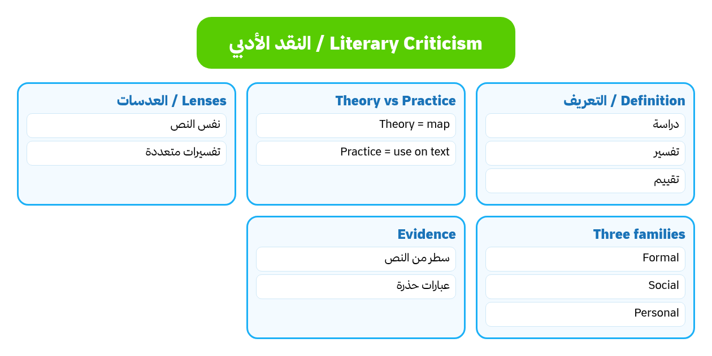

آداب الإنجليزية
: قواعد وجرامر وشعر وأساطير
⭐
0
🔥
استمر!
🔍
Literary Theory 1: يعني إيه نقد أدبي؟
📊
المستوى: A2
الدرس 1
🧩
نظرية الأدب
📄 حمّل PDF الدرس
📝 ملخص الدرس (عربي) PDF
📝 Lesson Summary (English) PDF
🧠 الخريطة الذهنية PDF
🧠 شوف الخريطة الذهنية للدرس

كل دروس الكورس
الدرس اللي بعده
←